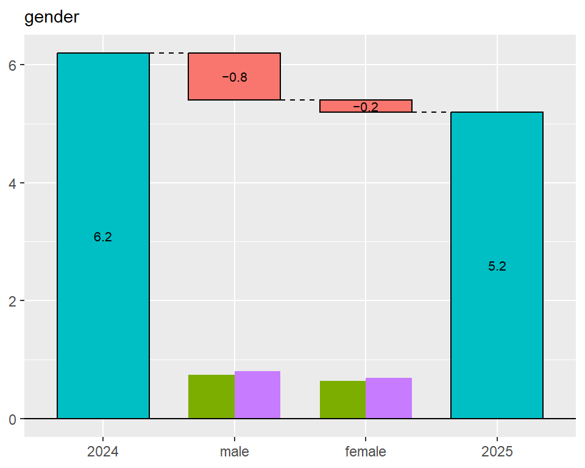
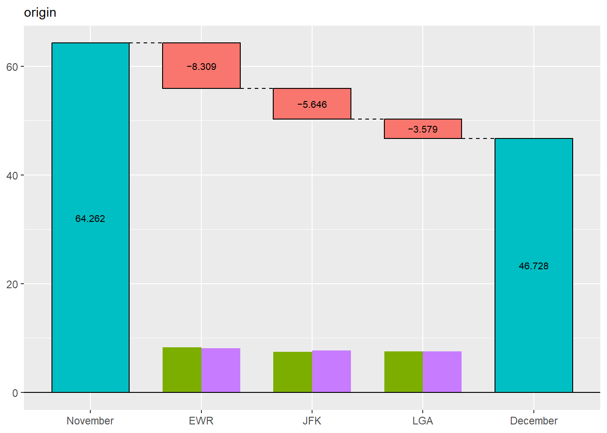
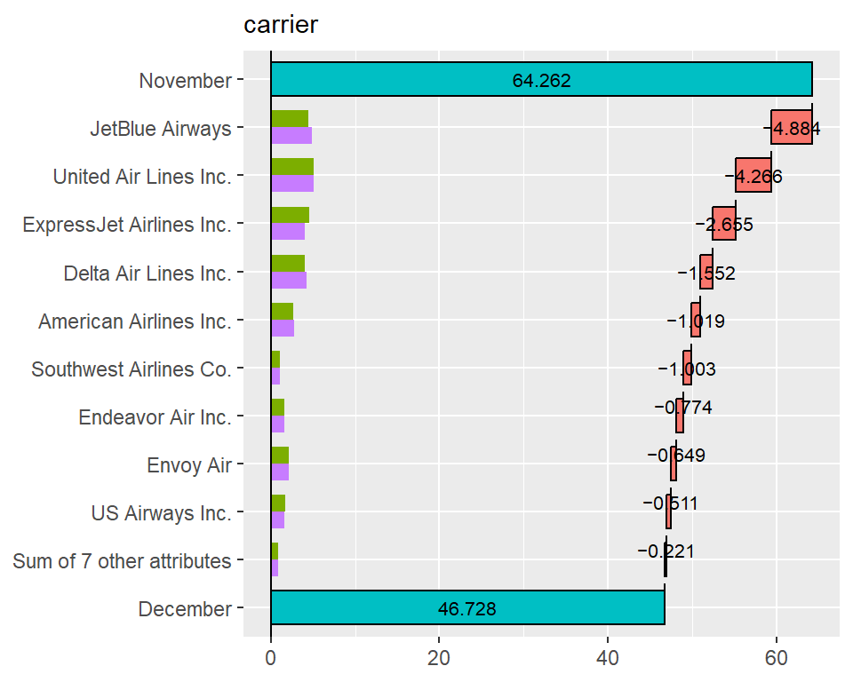
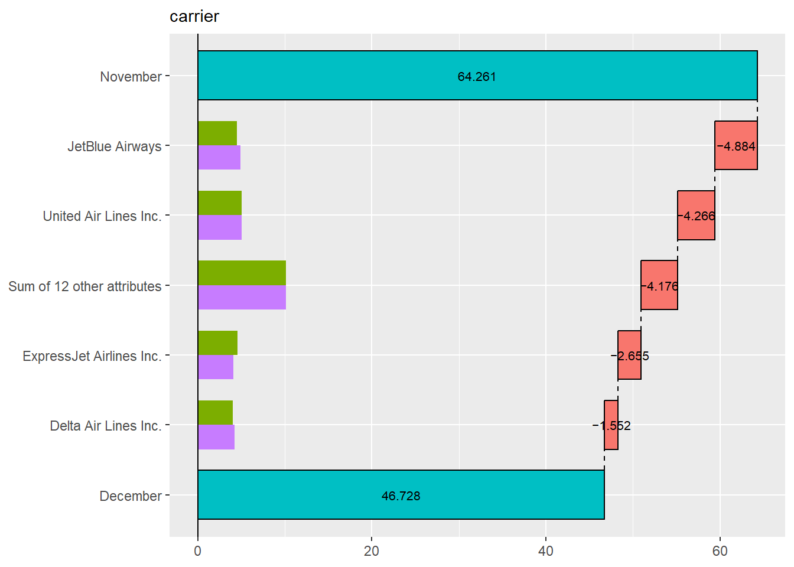
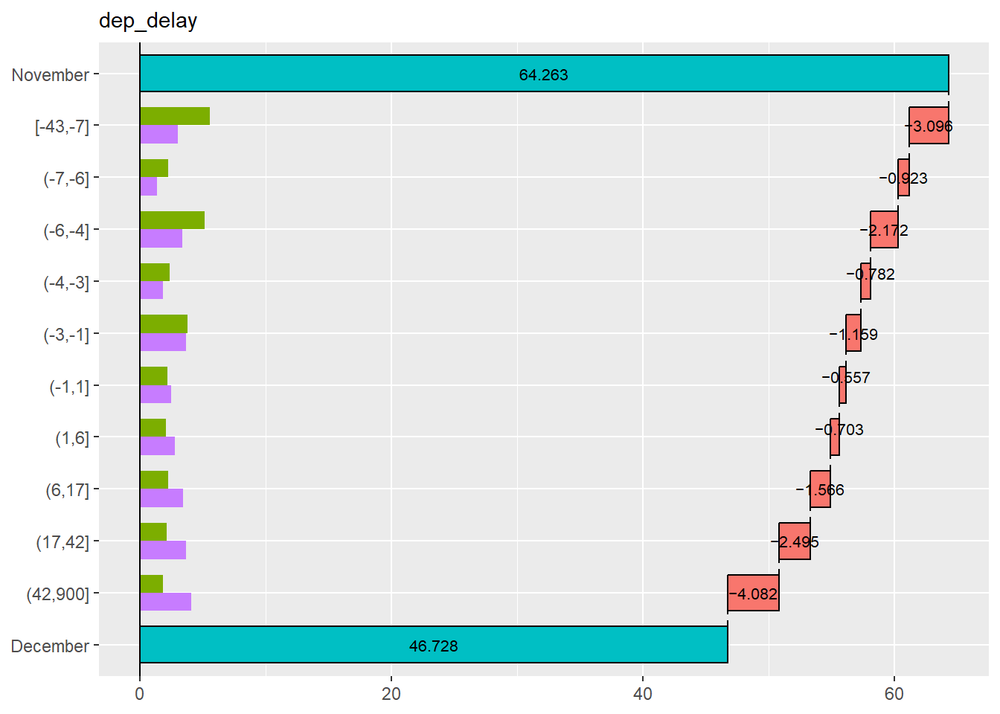
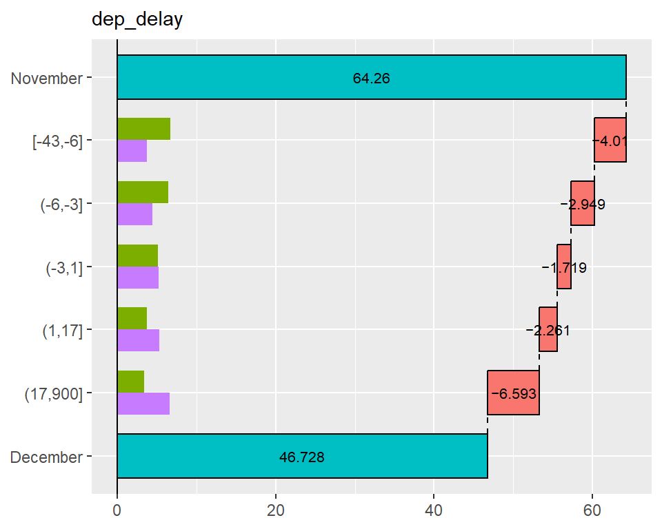

1. Overview
In data analysis, when a metric differs between two groups, we sometimes want to investigate whether a particular subgroup is driving that difference. For example, when a key metric decline is detected compared to the previous year, you may want to conduct a more detailed analysis. In this analysis, you may focus on gender among the attributes and examine whether the decline occurred among male, female, or both. However, this type of analysis is challenging when the metric is a rate, because the magnitude of each subgroup’s contribution to the rate cannot be simply calculated, unlike in the case of volume metrics.
To address this issue, we propose an approach inspired by the story of the Ship of Theseus. This approach involves gradually replacing the components of one group with those of another, recalculating the metric at each step. The change in the metric at each step can then be interpreted as the contribution of each subgroup to the overall difference.
For instance, suppose the metric was 6.2% in 2024 and decreased to 5.2% in 2025. Again, we focus on gender. We replace the male data within the 2024 dataset with the male data from 2025 and recalculate the metric. As a result, the metric would drop by 0.8 percentage points, reaching 5.4%. In this case, the contribution of the male group to the change in the metric is -0.8 percentage points. Next, we replace the female data from 2024 with that from 2025. The dataset then consists entirely of 2025 data, and the metric drops by 0.2 percentage points, reaching 5.2%. Thus, the contribution of the female group is -0.2 percentage points.
When visualized, the results appear as follows:
From this plot, we can see that the decline in the metric is primarily driven by the male group. We call this visualization the “Theseus Plot.”
The TheseusPlot package is designed to make it easy to generate Theseus Plots for various attributes.
2. Installation
You can install the TheseusPlot package from CRAN.
install.packages("TheseusPlot")You can install the development version from GitHub with:
remotes::install_github("hoxo-m/TheseusPlot")3. Details
3.1 Prepare Data
To create Theseus plots, you need two data frames that share common columns.
We use the 2013 New York City flight data from nycflights13 as a demo dataset. Here, we will define the rate metric as the proportion of flights that arrived on time. In December 2013, the on-time arrival rate dropped substantially compared to November. We investigate the cause using a Theseus plot.
First, we create an on_time column in the data frame to indicate whether each flight arrived on time. Next, we extract the flights for November and December into separate data frames to form two comparison groups. The on-time arrival rate was 64% in November and dropped to 47% in December.
library(dplyr)
library(nycflights13)
data <- flights |>
filter(!is.na(arr_delay)) |>
mutate(on_time = arr_delay <= 0) |> # Arrived on time
left_join(airlines, by = "carrier") |>
mutate(carrier = name) |> # Convert carrier abbreviations to full names
select(year, month, day, origin, dest, carrier, dep_delay, on_time)
data |> head()
#> # A tibble: 6 × 8
#> year month day origin dest carrier dep_delay on_time
#> <int> <int> <int> <chr> <chr> <chr> <dbl> <lgl>
#> 1 2013 1 1 EWR IAH United Air Lines Inc. 2 FALSE
#> 2 2013 1 1 LGA IAH United Air Lines Inc. 4 FALSE
#> 3 2013 1 1 JFK MIA American Airlines Inc. 2 FALSE
#> 4 2013 1 1 JFK BQN JetBlue Airways -1 TRUE
#> 5 2013 1 1 LGA ATL Delta Air Lines Inc. -6 TRUE
#> 6 2013 1 1 EWR ORD United Air Lines Inc. -4 FALSE
data_Nov <- data |> filter(month == 11)
data_Dec <- data |> filter(month == 12)
data_Nov |> summarise(on_time_rate = mean(on_time)) |> pull(on_time_rate)
#> [1] 0.6426161
data_Dec |> summarise(on_time_rate = mean(on_time)) |> pull(on_time_rate)
#> [1] 0.46728353.2 Basics
Using the two prepared data frames, we first create a ship object. The ship object is an instance of the R6 class ShipOfTheseus, designed to create Theseus plots.
library(TheseusPlot)
ship <- create_ship(data_Nov, data_Dec, y = on_time, labels = c("November", "December"))You can create a Theseus plot by passing column names to the plot method of a ship object. For example, to create a Theseus plot for the airport of origin:
ship$plot(origin)
New York City has three major airports, and Newark Liberty International Airport (EWR) accounted for the largest share of the decline in the on-time arrival rate.
Note that the number of flights at each airport matters, as a larger flight volume is expected to have a greater impact. To make this clear, the Theseus plot displays the data size for each group within each subgroup as a bar chart. From this, we see that the number of flights is similar across airports, allowing for direct comparison of contributions.
In summary, a Theseus plot consists of two components:
- A waterfall plot showing how much each subgroup contributed to the change in the metric.
- A bar chart representing the sample size for each group within each subgroup.
A ship object also provides the table method to inspect the exact values used in the Theseus plot.
ship$table(origin)
#> # A tibble: 3 × 8
#> origin contrib n1 n2 x1 x2 rate1 rate2
#> <chr> <dbl> <int> <int> <int> <int> <dbl> <dbl>
#> 1 EWR -0.0831 9603 9410 6251 3901 0.651 0.415
#> 2 JFK -0.0565 8645 8923 5702 4332 0.660 0.485
#> 3 LGA -0.0358 8723 8687 5379 4393 0.617 0.5063.3 Flipping the Plot
When there are many subgroups, a Theseus plot can become hard to read. In such cases, you can swap the x- and y-axes for better visualization.
ship$plot_flip(carrier)
When the number of subgroups is large, those with small contributions are automatically grouped together. By default, this happens when there are more than 10 subgroups, but the threshold can be adjusted with the n argument.
ship$plot_flip(carrier, n = 5)
From this plot, JetBlue Airways and United Air Lines appear to have the largest contributions to the decline in on-time arrival rate.
3.4 Automatic Discretization of Continuous Values
Theseus plots do not directly support continuous variables. If a continuous column is provided, it is automatically discretized. For example, we can create a Theseus plot for departure delays.
ship$plot_flip(dep_delay)
By default, continuous variables are discretized so that each subgroup has roughly equal sample sizes, with the number of bins set to 10. You can modify these settings by passing the return value of continuous_config() to the continuous argument.
ship$plot_flip(dep_delay, continuous = continuous_config(n = 5))
This result shows that both a decrease in on-time departures and an increase in delayed departures contributed to the decline in on-time arrival rate.